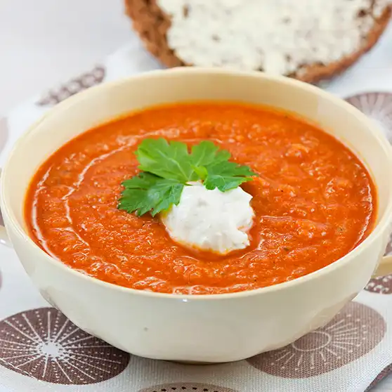

Cherry Tomato Soup

Description
My colleague gave me a bunch of cherry tomatoes.
I was wondering if I'm able to use them before they expire.
So I had an idea to make a delicious tomato soup.
I wanted a simple yet tasty recipe. I also wanted to utilize most of the ingredients I found in my fridge.
So this is what I came up with:
Ingredients
- 3 boxes of cherry tomatoes
- An onion
- 2 pieces of garlic
- Philadelphia cheese
- Grated cheese
Steps
- Chop onion and garlic
- Warm them in a kettle (don't roast!)
- Throw tomatoes into kettle
- Let simmer for 5 minutes
- Use an appliance to make it into fine soup
- Add Philadelphia cheese and Grated cheese
- Let simmer for 15 minutes
- Serve!